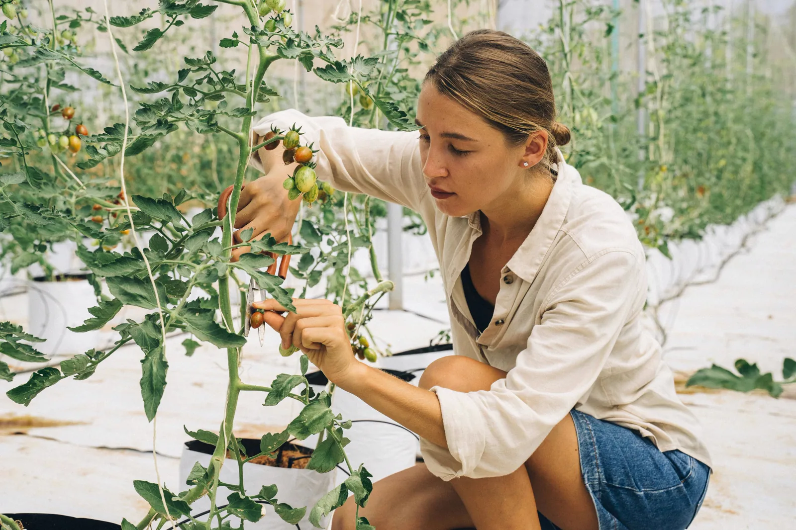
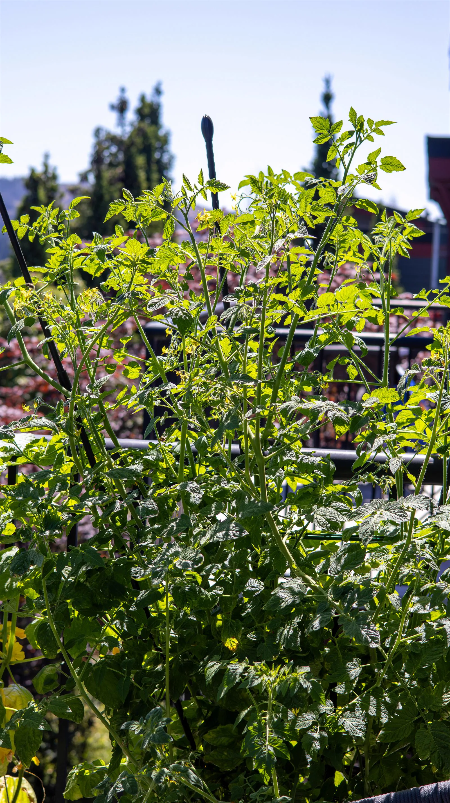
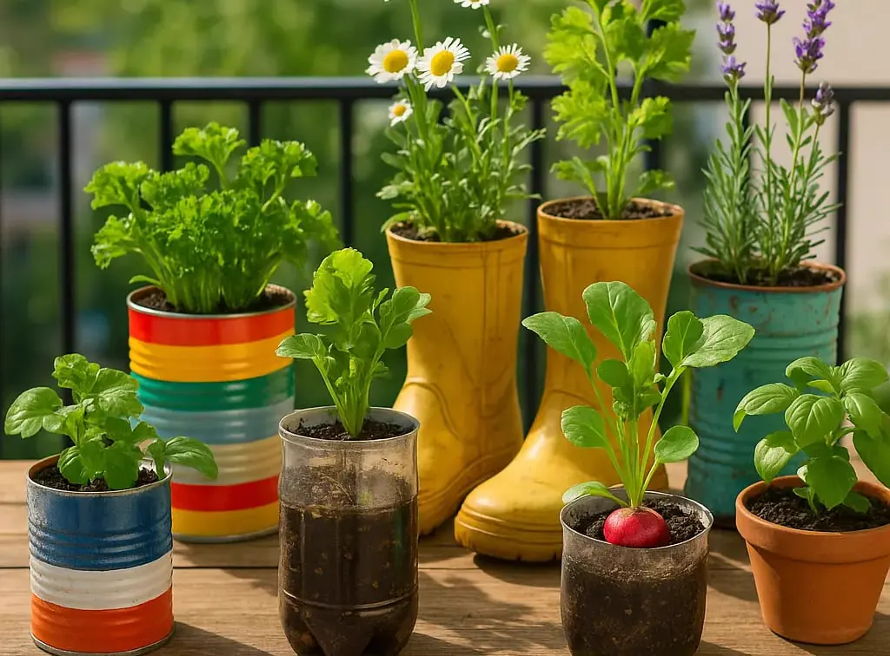

Son approche
Son approche reste pratique et mesurée : moins d’achats impulsifs, plus de solutions durables, stables et faciles à entretenir. Chaque conseil part des contraintes réelles d’un balcon urbain.

Tailler des tomates en pot : reconnaître les gourmands, garder assez de feuilles, limiter l'encombrement et éviter les erreurs qui fatiguent les plants.

Semis direct, pot assez profond, arrosage régulier : les haricots nains donnent vite confiance sans installer de grand tuteur.

Potager de balcon en juin : arrosage, paillage, tomates, basilic, semis rapides, fleurs utiles et gestes simples pour garder des pots productifs.

Légumes faciles balcon : 10 cultures en pot pour débuter, avec profondeur, exposition, arrosage et liens vers laitues, radis, tomates cerises et...

Balcon à l’ombre : plantes adaptées, légumes-feuilles, aromatiques, fleurs, arrosage et organisation pour cultiver en pot malgré le manque de soleil.

Aromatiques en pot : quelles variétés choisir selon l’exposition, comment les arroser, les associer et récolter basilic, menthe, thym ou persil.

Coccinelles, syrphes, abeilles solitaires, chrysopes : quels insectes utiles attirer sur un balcon et comment les faire venir naturellement.

Balcon venteux : quelles plantes choisir, quels pots éviter et comment protéger ses cultures sans surcharger l’espace. Le guide simple pour jardiner...

Rempoter ses plantes de balcon : bon moment, bon pot, bon terreau et gestes utiles pour relancer une plante en pot sans la brusquer.

Pommes de terre sur balcon : sac de culture, variétés précoces, buttage, arrosage et récolte propre. Un guide clair pour produire facilement en pot.

Réduction de la consommation d’eau sur balcon : découvrez 10 astuces simples, économiques et durables pour arroser moins tout en gardant vos plantes...

Crée tes propres DIY pots pour le balcon à partir d’objets du quotidien : boîtes de conserve, passoires, briques… Une solution écolo, simple et...

Fleurs utiles, eau peu profonde, abris simples et zéro pesticide : les gestes qui rendent un balcon plus accueillant pour les pollinisateurs urbains.